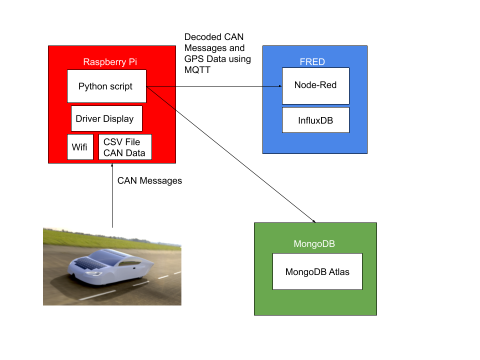
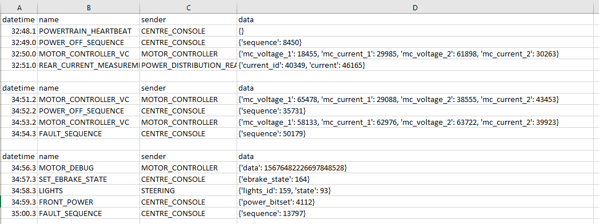
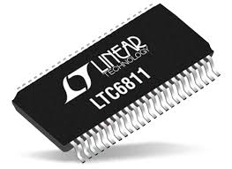
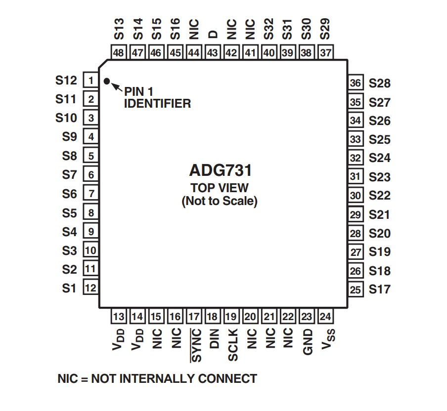
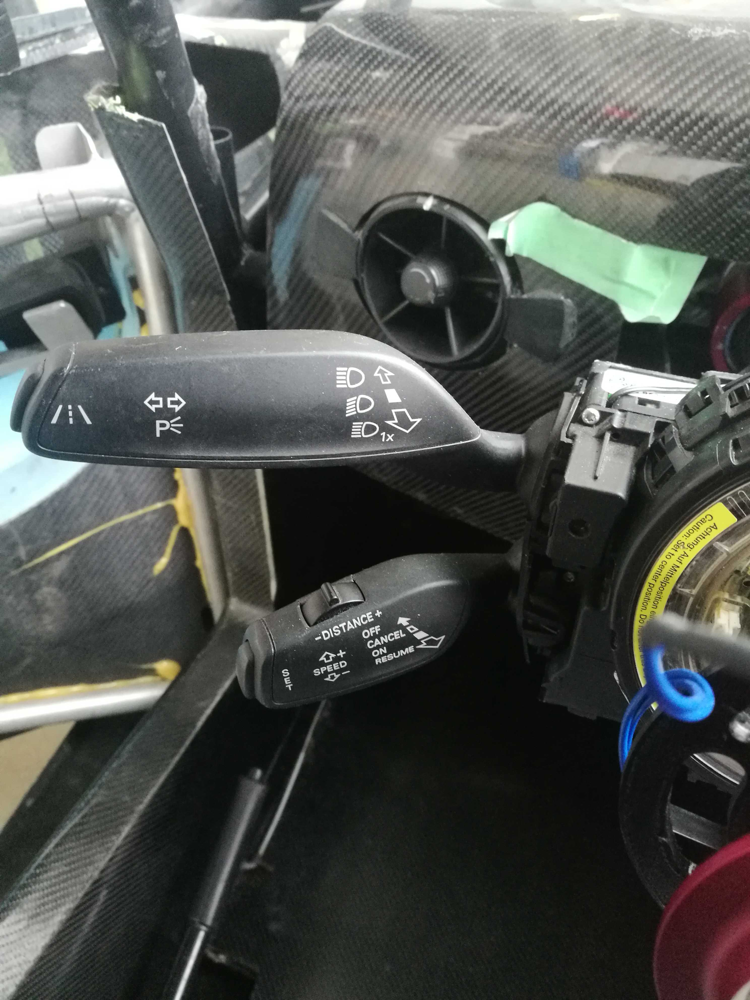

What is Midnight Sun?
Midnight Sun is a student design team focused on creating a solar car for the American Solar Car Challenge. Each season we make a new solar car. The video below describes what my team does.
Midnight Sun Official WebsiteMy Work on Midnight Sun
Telemetry
Below is a brief outline of how I have layed out everything for telemetry
The Raspberry Pi runs a Python script that I wrote to pick up CAN messages from the vehicle and GPS alongside it. This then writes this data to a CSV file, sends it to MongoDB Atlas, the driver display flutter app, and FRED (Front End for Node Red). The data is sent to FRED using MQTT, which picks up the CAN messages and stores them in InfluxDB for 2 days. Below I have an example of the format of the data which has already been decoded from the CAN bus.
Battery Management System (BMS)
Below is an LTC6811 which is used to monitor our batteries. In our vehicle, we have to make sure the sun is able to charge up our batteries properly and that these batteries do not overheat. Part of the code I wrote for our AFEs (Analog Front End), uses SPI to retrieve the temperatue of 32 thermistors connected to a mux in the BMS.
Below is the mux I interfaced to. Basically, we have controllers boards that talks to the LTC6811 with SPI, which then talks to the mux with SPI as well. However, all the code I wrote directly controls everything from the controller boards.
Steering
The steering stalk was the first project I was given when I entered the solar car team. It is in charge of controlling the cruise control, lights, horn, and radio in the car. For all the digital input (eg horn), there is an interrupt attatched to the pin on the board for each peripheral. When the driver presses a button on the steering stalk, they can toggle the state of the lights, horn , or radio. My module then detects this, raises an interrupt, and sends a CAN message to the power distribution to provide power to the proper location in the vehicle. For the analog input (specifically the control stalk), the module uses an ADC to read voltages from the control stalk and sends CAN messages based off of the voltages.
